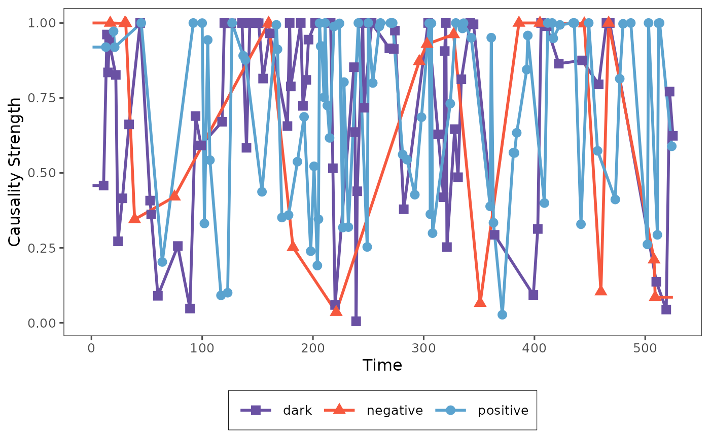
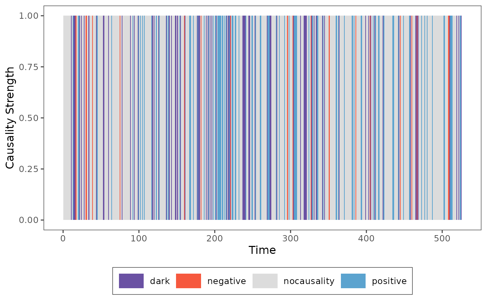

Dynamic Analysis: Pattern Causality in Time Points
Stavros Stavroglou, Athanasios Pantelous, Hui Wang
Source:vignettes/dynamic.Rmd
dynamic.RmdAs it’s hard to understand the pattern causality algorithm based on chaos theory, some researchers always wonder if this algorithm is able to capture the dynamic causality between series.
In this vignette, we will demonstrate how to use the
patterncausality package to analyze the dynamic causality
between two series.
First of all, we need to load the package and the dataset as usual.
library(patterncausality)
data(climate_indices)Here we choose the typical climate dataset to show the dynamic
analysis. We can easily get the pattern causality result by
pcLightweight function to give a quick view, generally
speaking, this result is obtained by the whole time points.
Causality Strength Analysis with ERF Function
X <- climate_indices$AO
Y <- climate_indices$AAO
result <- pcLightweight(X, Y, E = 3, tau = 1, metric = "euclidean", h = 1, weighted = TRUE, verbose=FALSE)The parameter weighted decides if we need to calculate
the causality strength by erf function, we can show this kind of
strength here in each time point.
To get the causality strength in each time point, we need the
recorded function pcFullDetails to give causality strength
details.
result <- pcFullDetails(X, Y, E = 3, tau = 1, metric = "euclidean", h = 1, weighted = TRUE, verbose=FALSE)
print(result)
#> Pattern Causality Full Analysis
#> ------------------------------
#> Analysis period: 8 532
#> Number of valid observations: 525
#> Causality spectrum range: No valid values
#>
#> State space dimensions: 533 x 3
#> Pattern space dimensions: 9 x 9 x 535The summary of the result is shown, all the related data has been
saved in the result object, then we can plot the causality
strength series from this, as we said in the previous work, the each
time point if and only if the causality is one of the three types, so
the each time point just has one causality.
plot_causality(result, type="total")
We can also plot the causality strength seperately.
plot_causality(result, type="positive")Then it will show the single causality strength series of each status to observe the dynamic causality, since each time point just has one causality, so we use the linear interpolation to connect the points of each causality.
Raw Causality Strength Analysis
However, sometimes we also want to choose
weighted = FALSE to get the raw causality strength series,
we can estimate the causality again by the pcFullDetails
function.
result <- pcFullDetails(X, Y, E = 3, tau = 1, metric = "euclidean", h = 1, weighted = FALSE, verbose=FALSE)
print(result)
#> Pattern Causality Full Analysis
#> ------------------------------
#> Analysis period: 8 532
#> Number of valid observations: 525
#> Causality spectrum range: No valid values
#>
#> State space dimensions: 533 x 3
#> Pattern space dimensions: 9 x 9 x 535Obviously, the number of total causality points is the same, then we also provide the plot function for this situation to find more details about the dynamic causality.
plot_causality(result, type="total")
Then the causality strength in this situation is just 1 and 0, that’s why the figure is the bar plot, we can find the causality type in each time point and we can also obverse different causality in different time points.
These two kinds of functions extended the pattern causality to the dynamic analysis, we can find more information from the time field and the features in different time points and different causalities.